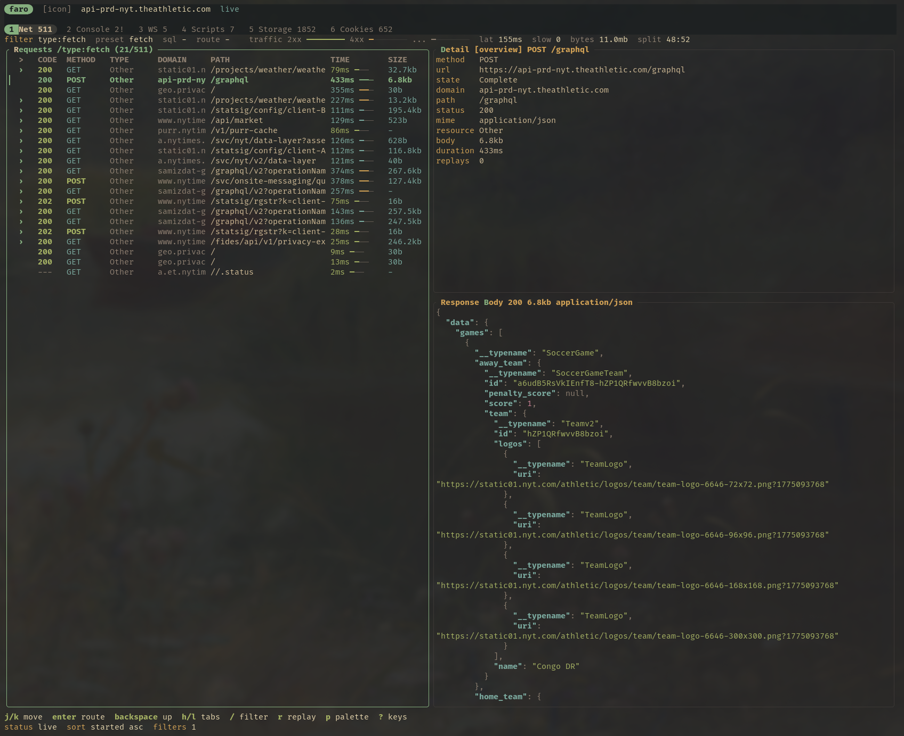

Network workbench
Route drilldown, regex filters, presets, response bodies, curl export, replay, and request timing in one navigable view.
Faro captures Chromium network traffic, console output, storage, cookies, WebSockets, replay data, scripts, and read-only SQL into a durable SQLite database with a fast terminal UI, CLI, and MCP server.

Faro is intentionally narrow: browser investigation, request replay, storage inspection, scripts, and database-backed debugging.
Route drilldown, regex filters, presets, response bodies, curl export, replay, and request timing in one navigable view.
Inspect logs, errors, warnings, stack traces, and run JavaScript through your configured editor workflow.
Stream sent and received frames with opcode labels, payload inspection, JSON formatting, and filtering.
View and edit localStorage, sessionStorage, and cookies with two-pane details and editor handoff.
Query the capture database safely from the TUI, CLI, scripts, or MCP without mutating the store.
Save and run Rhai scripts against Faro data and browser capabilities for repeatable investigations.
Faro exposes an agent-friendly CLI and a stdio MCP server for listing requests, reading response bodies, replaying calls, inspecting console errors, querying storage, and running guarded SQL.
{
"mcpServers": {
"faro": { "command": "faro", "args": ["mcp"] }
}
}
# capture a page $ faro capture http://localhost:5173 --for 15s --json # inspect failing requests under a route $ faro requests --route /api --filter "status >= 400" --json # copy a full reproducible request $ faro request curl req_123 # query the SQLite capture $ faro sql "select * from requests where status_code >= 500"
Requires stable Rust, a Chromium-family browser, and curl for replay workflows.
$ git clone https://github.com/nullslate/faro $ cd faro $ cargo install --path crates/app $ faro http://localhost:5173